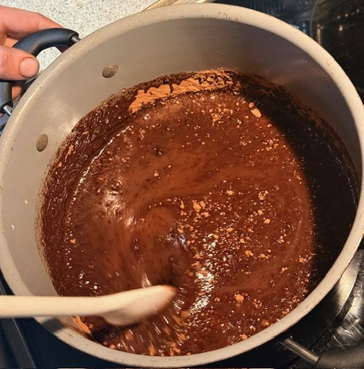
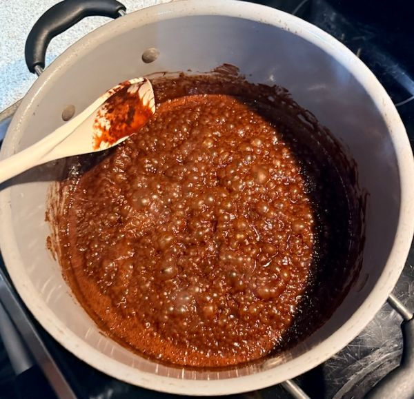
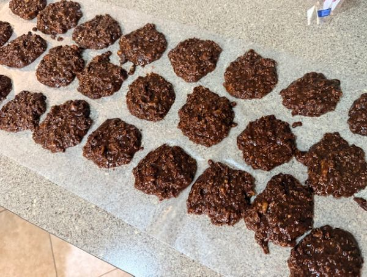

Nobake Cookies!

Description
Have a craving for cookies, but don't want to heat up the house with your oven? Try these chocolatey, chewy, cookies that require no oven at all! The combination of oats, chocolate, butter and sugar lend to a cookie that also easily incorporate other of your favorite ingredients like nuts or coconut!
Ingredients
- 6 TBSP Cocoa Powder (I like Hershey's)
- 2 cups granulated white sugar
- 1 stick marjerine or salted butter
- 1/2 cup whole milk
- 3/4 cup peanut butter (I like crunchy!)
- 1 tsp vanilla extract (homemade mexican vanilla is best)
- 3 cups quick oats (MUST be quick oats!)
Steps
- Begin melting butter in pot
- Add cocoa, sugar, and milk, and bring to a boil
 - Boil 1 minute, then turn off heat
 - Add peanut butter, vanilla and oats
- Stir to incorporate and quickly spoon onto wax paper in cookie sized dollups
 - Let cool for 1-2 hours, and enjoy!
Note: Cookies keep well in ziplog baggies or buckets for 3-5 days. They remain good longer, but begin to become crumbly as they dry-out.